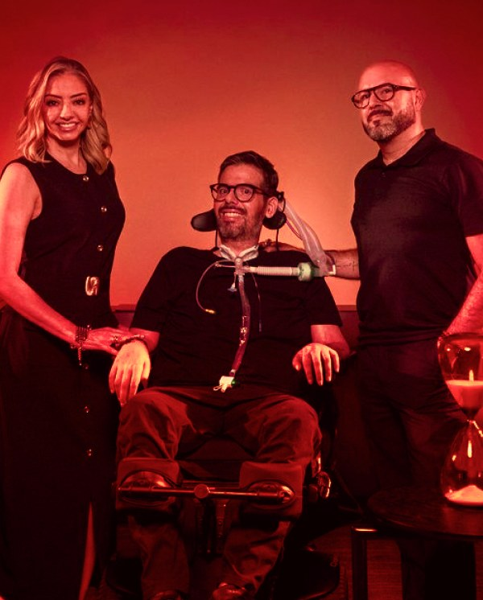
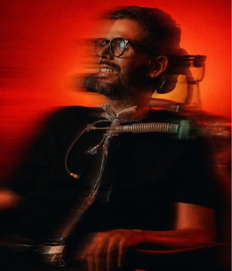
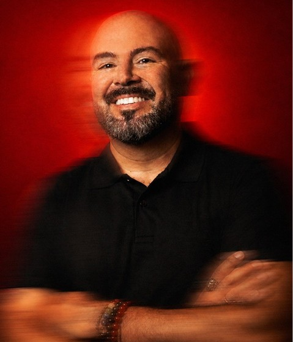
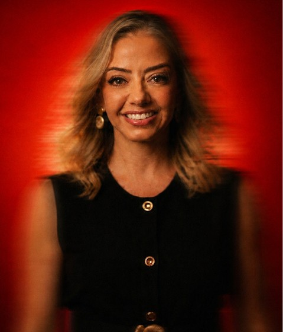
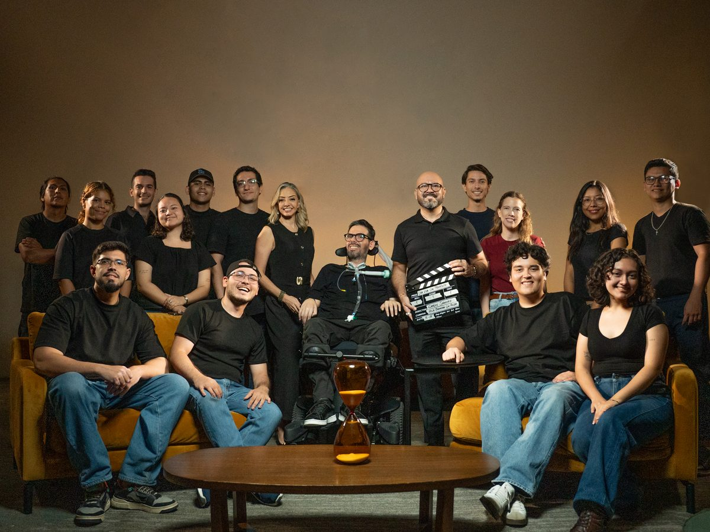

Una Vida Con Propósito — Podcast

Tres voces, cero pose. Conversaciones honestas sobre propósito, identidad y transformación — para quienes están dispuestos a detenerse a escuchar de verdad.
Qué es Una Vida Con Propósito
Podcast de conversaciones profundas, alejado de la fórmula de la entrevista promocional.
Historias reales de vulnerabilidad, coraje y transformación.
Distribución en video y audio: YouTube, Spotify, Apple Podcasts y redes sociales.
Una conversación guiada por tres voces — no un formato de preguntas y respuestas.

Vivimos en piloto automático: vida acelerada, saturación de información, presión por producir, aparentar y avanzar.
Una Vida Con Propósito existe para abrir un espacio distinto — una conversación honesta, sin urgencia, para mirar la propia vida con más conciencia.
El ADN diferencial
La identidad de UVCP no depende de un tema o un invitado — depende de la combinación de tres perspectivas.

Leonardo Landívar Castro
Fragilidad y conciencia del presente.

Rodrigo Bellott Machi
Reconstrucción del yo: cuerpo, mente y neurociencia.

Aldana Fernández de Córdova
Mirada humanista, organizacional y la práctica cotidiana del propósito.
Episodios e invitados destacados
Un adelanto de cómo se siente estar en la conversación. Un invitado de alto impacto por mes, sin prisa por llegar a ningún lado.
“Cuando el ruido se apaga, aparece el propósito.” — Episodio piloto
Temas que atraviesan las conversaciones
Señales de confianza, no de escala
Estamos en etapa piloto: un primer episodio, un equipo de producción real y una comunidad que recién empieza a formarse. Preferimos mostrar eso con honestidad antes que inflar números.
En su primera semana en Instagram y Facebook:

Para marcas
Una alianza, no una interrupción
UVCP ofrece algo difícil de comprar con pauta tradicional: intimidad intelectual. Quien pasa 90 a 120 minutos con una voz construye lealtad — y esa lealtad puede transferirse a una marca cuando la integración es honesta y útil.
Propósito, autenticidad y bienestar
Asociación directa con valores que las audiencias hoy exigen de verdad.
Audiencia de alta afinidad
Acceso a una comunidad culturalmente curiosa, dispuesta a escuchar sin interrupción.
Integración natural
La marca entra como parte del contexto, no como una pausa comercial.
Vida útil prolongada
El contenido permanece: se escucha, se revisita y se comparte mucho después del estreno.
Brand safety e independencia editorial
Conversaciones curadas con criterio, sin ceder el control editorial.
Retorno reputacional, relacional y de negocio
Confianza que se transfiere de la conversación a la marca.